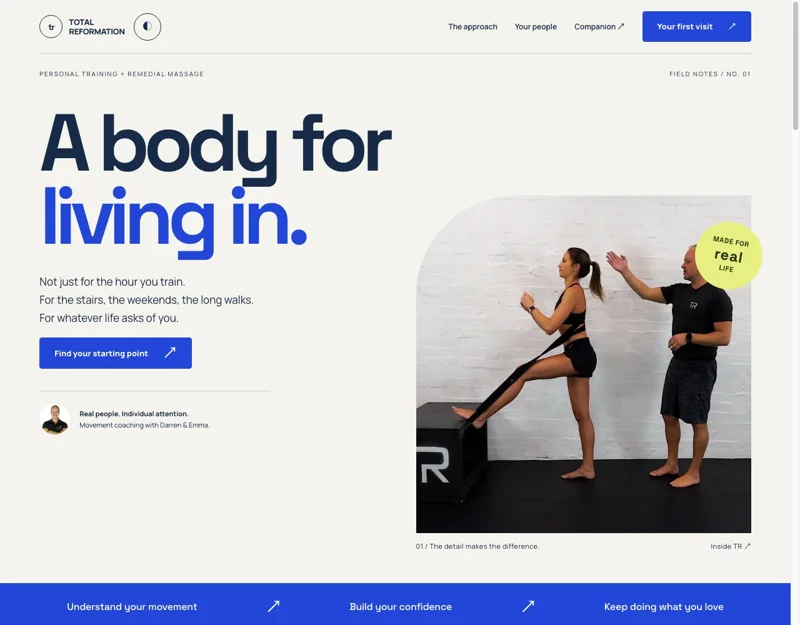
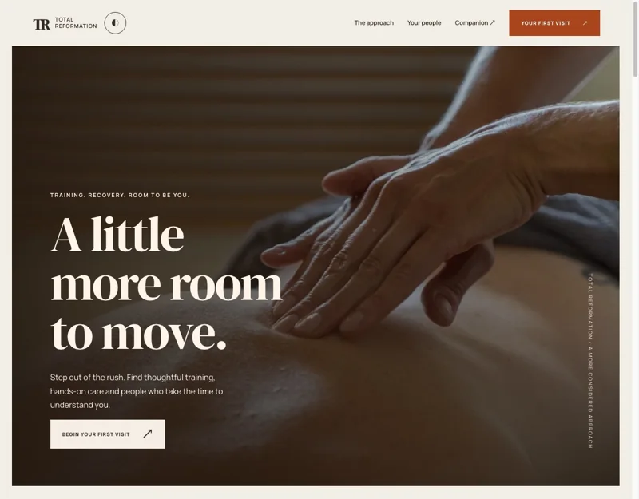
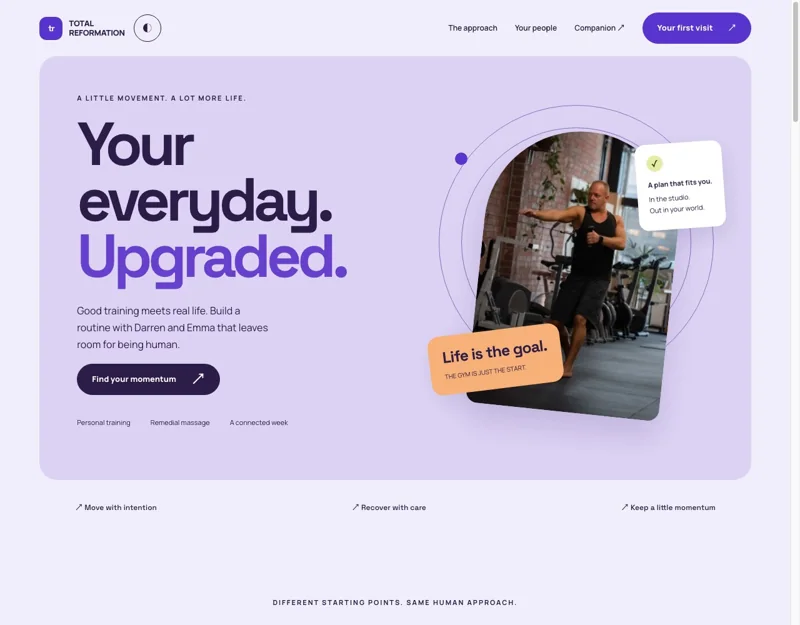

A plan for real life.
A life-goal intention, trainer videos, a clear next appointment and a small-wins journal. No body scores, guilt-driven streaks or generic workout feed.
Different personalities. The same belief: better movement starts with a real relationship.
Three website directions for Darren and Emma, and a companion that brings the care home.

A body for
A little
Your everyday.Explore a sample client’s week, play Darren’s videos, record a check-in, then switch to the coach workspace and publish a changed plan.
Open the companion ↗Browser-local simulation. No live accounts or client data.
A life-goal intention, trainer videos, a clear next appointment and a small-wins journal. No body scores, guilt-driven streaks or generic workout feed.
A client check-in reaches the demo coach inbox. Acknowledgement closes the loop. Publish a plan once and see it reflected in the client view.
Explain the first visit, avoid asking clients to diagnose themselves, and offer a clear route to a conversation. Less uncertainty, less booking friction.
Site intention finders, sample appointments, video playback, colour variants, app navigation, calendar selection and download, completion toggles, searchable/saved videos, intention changes, check-ins, coach acknowledgement, plan publishing, small wins, visit-brief download and reset. Choices persist in local storage and synchronise between tabs on the same browser. They do not sync between devices or to a server.
A real product would need secure member authentication, live booking and plan APIs, appropriate consent and health-data safeguards, owner-approved wording, captioned exercise videos, device testing and a support process. Preserve the existing site and Microsoft 365 mail while piloting any new front end. Wix Headless is a candidate to investigate against the actual account, not an integration implemented by this demo.
Technogym’s connected-product clarity; Aman’s calm pacing; Equinox’s editorial confidence; Othership’s expressive personality; Nike Training Club’s flexible routines; WHOOP’s organised educational content. The layouts, copy and identities here are original proposals. No reference-brand photography or code is reused. Commercial success does not prove a palette causes retention.
No. This is an independent directory and separate GitHub repository. The existing Opus collection ↗ remains untouched. This is a proposal, not an official replacement for Total Reformation’s operational website.
First: choose one visual direction and validate the service wording and booking journey with Darren and Emma. Next: pilot a small trainer-owned video library and a simple client check-in. Then consider account integration and cross-device plans. Defer AI health scores, automatic prescriptions and a native app build until the real workflow earns them.